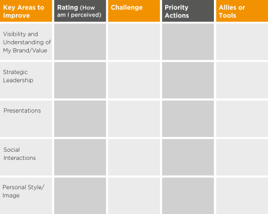
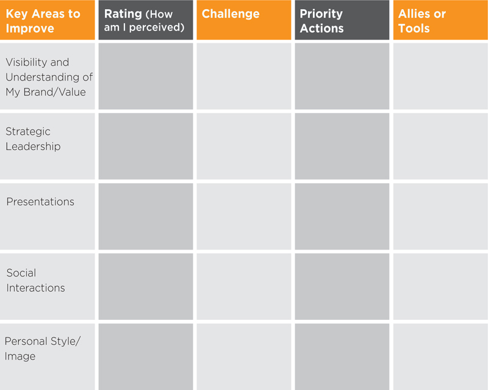
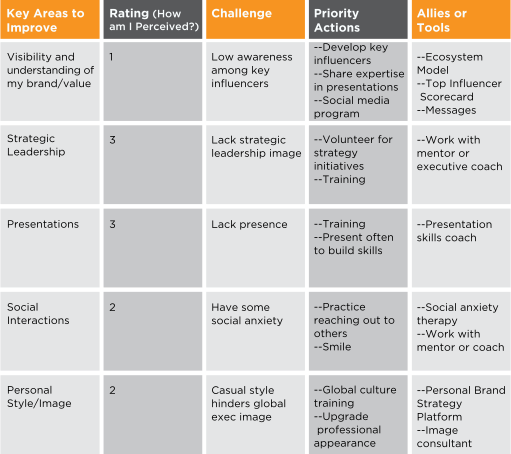
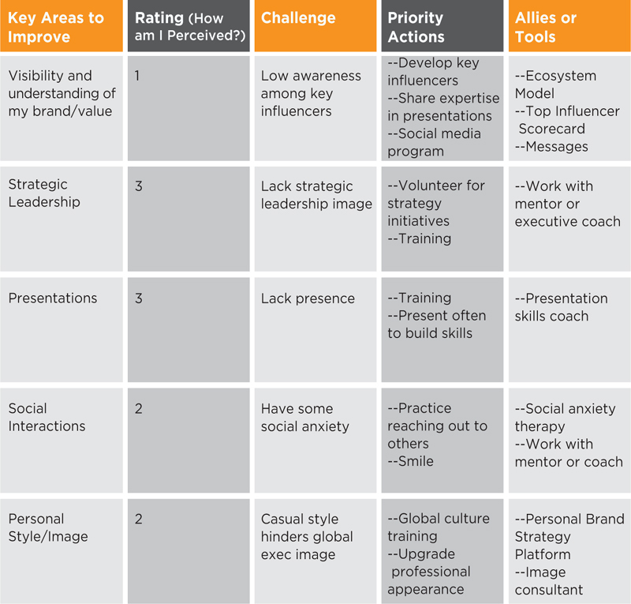

Brand improvement focuses on filling the gaps between your current brand strategy platform and your desired brand strategy platform that you completed in chapter 4. Let’s revisit sections of our Brand Strategy Platform to see a sampling of brand improvements for some of our individual branding examples.
Figure 6.1
| Strengths (Cake) | |
| Hard Skills | ←Hard Skills. Bob, the unemployed computer programmer, needed to develop more skills in the area of web software development. He can take courses, read technical books and do pro bono programming to gain these skills. |
| Soft Skills | ←Soft Skills. Eileen, who wanted to become vice president of marketing, needed to work on her collaboration and leadership skills. She can work with an executive coach, take courses, read business books and look for opportunities to learn from others. |
| Expertise | ←Expertise. Marnie, who wanted to be an elder care sales specialist, had to volunteer, network and do Internet research to gain the expertise and experience she needed to change careers from retail sales. |
Figure 6.2
| Personality (Icing) | |
| Personality Attributes | ←Personality. Eileen needed to create a more empathetic personality to be more effective in a collaborative corporate culture. She can work with her executive coach or mentor on this change. |
| Type of leader, worker, friend | |
| Brand Metaphor |
Figure 6.3
| Brand Image (Cake & Icing) | |
| Brand Associations | |
| External Image | ←External Image. Alison, the corporate lawyer, upgraded her wardrobe, got a sleeker and more professional hairstyle and projected more confidence to enhance being seen as the strategic IP lawyer that she was. |
| Relationship Image |
Figure 6.4
| Brand Promise (Cake & Icing) | |
| Rational Value | |
| Emotional Value | |
| Brand Experience | ←Brand Experience. Candidate Hillary’s brand promise included “solving problems with citizen engagement,” so she needed to increase her opportunities to LISTEN and learn from residents. |
Figure 6.5 is a sample brand improvement template. As you look at the gaps between your current brand and desired brand in the Brand Strategy Platform, you will recognize areas where you need to improve. I have populated this brand improvement template with some areas that are key to strong brands. However, you can customize the Key Areas to Improve column to the specific areas in which you need work.
Figure 6.5
Brand Improvement Template
 
To access PDF version, go to www.brandingpays.com/resources
To give you an idea of what a high-level brand improvement plan might look like, see Fig. 6.6. The Rating column should be filled with a number, with 1 indicating very low achievement and 5, very high achievement. This number should reflect how you are currently perceived based on your own assessment and feedback from others. Over time, your goal should be to raise all of your scores to a 4 or 5.
Put what may be holding you back in the Challenge column. In Priority Actions, list a few key actions you can take to change your behavior and people’s perceptions of you. In Allies and Tools, identify the BrandingPays tool and other people and resources who could help you to make the improvements you seek.
Figure 6.6
Sample Brand Improvement Plan
 